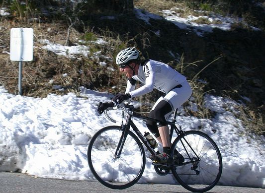

|  |
| Tim turns toward the summit (Allison Chaiken) |
Although the sub-freezing overnight temperatures scared away a few, over 130 riders finished today at Lick Observatory on the spectacular Mt Hamilton summit to cap off a very successful 2010 Low-Key Hillclimb Series. When the first riders arrived at the summit, the thermometer reported only a chilly 36F, but a warming sunshine and spectacularly clear views from the top warmed bodies and spirits as Low-Keyers basked in their successful beginning to the holiday. After suiting up on jackets delivered to the summit by Thomas Novikoff, the descent wasn't nearly as chilling as many feared, even if it was only 38F by the time most riders began their trip back down the mountain.
The highlight of the day was Ryan Sherlock his wife Melanie Spath. Ryan finished in an impressive 1:11:20, just ahead of 8-time Canadian time trial champion Eric Wohlberg. Ryan's time was the second-best Low-Key climb of Hamilton ever and just 35 seconds off David Wyandt's 1:10:45 from 1998. Eric's now third in the all-time list. Impressive results given the cold conditions! But Melanie was even better, finishing in 1:20, 1:21 faster than Laura Mullin's record from 1997. This made Melanie the top single-climb scoring rider on the day with an 143 points, putting her close to 3 points ahead of Chris Phipps' 140 points from Montebello.
In the team competition, it was Sisters and Misters ahead of Mission Cycling and Low-Key. Mission's strong showing put them onto the final Low-Key team podium, with Western Wheelers coasting in for the overall #1 followed by the Sisters and Misters. There was a wonderful battle this year for the team standings!
Also notable this week were the juniors. Andrien Costa finished in a super-strong 1:17:16, with Andre Swart locking up the series overall with his 1:29:30.
Thanks to all who came out to end 2010 on such a positive beat! We hope to see as many of you as possible at the end-of-season party on December 17 @ Sports Basement in Sunnyvale!
Strava T-shirt qualifiers indicated with orange background.
| pl | # | name | team | cat | time | mph | fph | score |
|---|---|---|---|---|---|---|---|---|
| 1 | 6 | Bill Bushnell | Low-Key | It Is About The Bike | 58:16 | 18.95 | 4530 | 100.52 |
| pl | # | name | team | cat | time | mph | fph | score |
|---|---|---|---|---|---|---|---|---|
| 1 | 808 | Ryan Sherlock | Zipvit/KCNC | 20+ | 71:42 | 15.39 | 3680 | 132.05 |
| 2 | 910 | Eric Wohlberg | Form Fitness | 45+ | 71:49 | 15.37 | 3675 | 131.86 |
| 3 | 109 | Brian Lucido | Sr's & Mr's of No Mercy | Tandem | 83:02 | 13.30 | 3179 | 125.97T |
| 4 | 147 | Russell Stevens | ACTC | 40+ | 75:42 | 14.58 | 3487 | 125.10 |
| 5 | 115 | Joe Mulvaney | Mission Cycling | 25+ | 75:49 | 14.56 | 3481 | 124.88 |
| 6 | 53 | Tim Clark | Low-Key | 40+ | 75:59 | 14.53 | 3473 | 124.62 |
| 7 | 7 | James Porter | Western Wheelers | 3 | 76:28 | 14.44 | 3452 | 123.84 |
| 8 | 39 | Ron Brunner | Low-Key | 40+ | 76:29 | 14.43 | 3450 | 123.80 |
| 9 | 920 | Chris Isley | Godspeed Tattoo | 3 | 76:33 | 14.42 | 3448 | 123.71 |
| 10 | 903 | Colin Brown | Team Kill | The Great Unwashed | 76:38 | 14.40 | 3444 | 123.55 |
| 11 | 509 | Mario Hernandez | Mission Cycling | 3 | 76:47 | 14.38 | 3437 | 123.33 |
| 12 | 972 | Adrien Costa | San Jose Bike Club | Junior | 77:16 | 14.29 | 3416 | 122.55 |
| 13 | 236 | Carl Nielson | Sr's & Mr's of No Mercy | 50+ | 77:25 | 14.26 | 3409 | 122.31 |
| 14 | 326 | Clark Foy | San Jose Bike Club | U23 | 78:46 | 14.01 | 3350 | 120.21 |
| 15 | 301 | Marcel Appelman | Mission Cycling | 40+ | 79:06 | 13.96 | 3337 | 119.71 |
| 16 | 88 | Rich Hill | LGBRC | 45+ | 79:14 | 13.93 | 3331 | 119.51 |
| 17 | 911 | Steve Fielding | Sr's & Mr's of No Mercy | 45+ | 79:54 | 13.82 | 3303 | 118.52 |
| 18 | 600 | Klaus Brosamle | Team Zappi's (Oxford) | 25+ | 81:14 | 13.59 | 3249 | 116.57 |
| 19 | 141 | Kieran Sherlock | Western Wheelers | 40+ | 81:26 | 13.56 | 3241 | 116.28 |
| 20 | 936 | Henry Scholz | Team Roaring Mouse | U23 | 81:54 | 13.48 | 3223 | 115.62 |
| 21 | 975 | Chris Look | Chico | 20+ | 81:57 | 13.47 | 3221 | 115.55 |
| 22 | 990 | Ryan Johnson | Team Roaring Mouse | 82:19 | 13.41 | 3206 | 115.02 | |
| 23 | 218 | Tom Gardin | Low-Key | 45+ | 82:23 | 13.40 | 3204 | 114.95 |
| 24 | 508 | Brad Ford | Silicon Valley Triathlon | 35+ | 82:33 | 13.37 | 3197 | 114.70 |
| 25 | 507 | Klaus Fleischmann | 40+ | 82:46 | 13.34 | 3188 | 114.40 | |
| 26 | 939 | Dai Sieh | Webcor/Alto Velo | 4 | 82:53 | 13.32 | 3184 | 114.25 |
| 27 | 304 | Rune Dahl | Western Wheelers | 45+ | 82:59 | 13.30 | 3180 | 114.11 |
| 28 | 104 | Michael Kolb | 45+ | 84:15 | 13.10 | 3133 | 112.40 | |
| 29 | 96 | Martin Hyland | Western Wheelers | 50+ | 84:34 | 13.05 | 3121 | 111.98 |
| 30 | 1 | Dan Connelly | Low-Key | 3 | 84:48 | 13.02 | 3112 | 111.67 |
| 31 | 969 | Will Pandori | UCSD | Junior | 85:37 | 12.89 | 3083 | 110.60 |
| 32 | 919 | Nick Humphrey | The TEAM | 3 | 86:23 | 12.78 | 3055 | 109.63 |
| 33 | 65 | J.D. Daniels | Eden Bikes | 35+ | 86:23 | 12.78 | 3055 | 109.63 |
| 34 | 986 | Bennett Lee | Speedy B | 40+ | 86:34 | 12.75 | 3049 | 109.38 |
| 35 | 214 | Joe Fabris | Plus 3 | 50+ | 86:52 | 12.71 | 3038 | 109.01 |
| 36 | 87 | Josh Hayes | Sr's & Mr's of No Mercy | 30+ | 86:54 | 12.70 | 3037 | 108.97 |
| 37 | 714 | Greg McQuaid | Western Wheelers | 40+ | 87:21 | 12.64 | 3022 | 108.41 |
| 38 | 123 | Christian Paquet | Doogie | 50+ | 87:27 | 12.62 | 3018 | 108.29 |
| 39 | 943 | Liam Stewart | Team Roaring Mouse | 4 | 88:21 | 12.49 | 2987 | 107.17 |
| 40 | 45 | Nathan Cauffman | UID | 30+ | 89:03 | 12.40 | 2964 | 106.33 |
| 41 | 228 | Russell McCrary | Sr's & Mr's of No Mercy | 50+ | 89:21 | 12.36 | 2954 | 105.99 |
| 42 | 177 | Andre Swart | LGBRC | Junior | 89:30 | 12.33 | 2949 | 105.80 |
| 43 | 244 | Naoto Sato | 45+ | 89:33 | 12.33 | 2947 | 105.75 | |
| 44 | 151 | Peter Tapscott | Webcor/Alto Velo | 60+ | 89:38 | 12.32 | 2945 | 105.65 |
| 45 | 58 | Kevin Comerford | Eden Bikes | 30+ | 89:43 | 12.30 | 2942 | 105.54 |
| 46 | 103 | Larry Klein | Doogie | 50+ | 89:48 | 12.29 | 2939 | 105.44 |
| 47 | 72 | Brian Edwards | The Dirkers | 89:58 | 12.27 | 2934 | 105.25 | |
| 48 | 82 | Ryan Gibson | 35+ | 90:07 | 12.25 | 2929 | 105.08 | |
| 49 | 219 | Bruce Gardner | 35+ | 90:09 | 12.24 | 2927 | 105.03 | |
| 50 | 704 | Rick Ferrell | 50+ | 90:15 | 12.23 | 2924 | 104.91 | |
| 51 | 124 | Steve Peck | Silicon Valley Triathlon | 40+ | 90:22 | 12.22 | 2921 | 104.79 |
| 52 | 30 | Matt Beadon | Nvidia | 30+ | 90:29 | 12.20 | 2917 | 104.65 |
| 53 | 721 | Chris New | 45+ | 91:18 | 12.09 | 2891 | 103.71 | |
| 54 | 225 | Justin Lucke | LGBRC | Vegan | 92:18 | 11.96 | 2859 | 102.59 |
| 55 | 158 | David Vrane | Sr's & Mr's of No Mercy | 45+ | 92:20 | 11.96 | 2858 | 102.55 |
| 56 | 62 | Vince Cummings | 50+ | 92:24 | 11.95 | 2856 | 102.48 | |
| 57 | 413 | Alexander Komlik | ACTC | 45+ | 93:10 | 11.85 | 2833 | 101.64 |
| 58 | 128 | Wojtek Poppe | Nvidia | 25+ | 94:00 | 11.74 | 2808 | 100.74 |
| 59 | 161 | Alan Weatherall | San Jose Bike Club | 45+ | 94:11 | 11.72 | 2802 | 100.54 |
| 60 | 727 | Tim Sullivan | 45+ | 94:41 | 11.66 | 2787 | 100.00 | |
| 61 | 98 | Peter Ingram | Independent | 55+ | 95:36 | 11.55 | 2761 | 99.05 |
| 62 | 715 | Shayan Moini-Yekta | insert winning team | 96:15 | 11.47 | 2742 | 98.39 | |
| 63 | 246 | Chuck Spiteri | Pen Velo/Pomodoro | 50+ | 96:16 | 11.47 | 2742 | 98.37 |
| 64 | 262 | Carmelo Rios | Plus 3 | 50+ | 96:34 | 11.43 | 2733 | 98.05 |
| 65 | 60 | Richard Contreras | rhus | 50+ | 97:02 | 11.38 | 2720 | 97.59 |
| 66 | 142 | Jeff Shute | 30+ | 97:48 | 11.29 | 2699 | 96.83 | |
| 67 | 66 | Jon Degenhardt | Alameda Velo | 50+ | 97:48 | 11.29 | 2699 | 96.83 |
| 68 | 164 | Robert Zeljko | Almost There | 40+ | 98:22 | 11.22 | 2683 | 96.27 |
| 69 | 64 | Han Wen | Grumpy Old Man (GOM) | 40+ | 98:36 | 11.20 | 2677 | 96.03 |
| 70 | 61 | Rob Cosaro | Doogie | 50+ | 99:11 | 11.13 | 2661 | 95.48 |
| 71 | 947 | Daniel Vigil | Mission Cycling | 35+ | 99:18 | 11.12 | 2658 | 95.36 |
| 72 | 907 | Akin Dirik | Webcor/Alto Velo | 40+ | 99:20 | 11.11 | 2657 | 95.32 |
| 73 | 226 | Bogdan Marian | Bikeforums.net | 30+ | 99:53 | 11.05 | 2642 | 94.80 |
| 74 | 324 | Jack Holmgren | SF Randonneurs | 55+ | 100:42 | 10.96 | 2621 | 94.03 |
| 75 | 208 | Jay Cohan | Spike the Wonder Dog | 45+ | 100:51 | 10.95 | 2617 | 93.89 |
| 76 | 905 | Tom Christiansen-Salameh | 20+ | 100:51 | 10.95 | 2617 | 93.89 | |
| 77 | 314 | Mike Salameh | 55+ | 100:54 | 10.94 | 2615 | 93.84 | |
| 78 | 78 | Bob Falkenberg | Webcor/Alto Velo | 45+ | 101:09 | 10.91 | 2609 | 93.61 |
| 79 | 327 | Nicholas Brummell | Atlas | 45+ | 101:55 | 10.83 | 2590 | 92.91 |
| 80 | 333 | Vinay Ravuri | Georgia Tech | 35+ | 103:49 | 10.63 | 2542 | 91.21 |
| 81 | 68 | Keith Devlin | Western Wheelers | 60+ | 104:29 | 10.56 | 2526 | 90.62 |
| 82 | 809 | Ben Verwer | 45+ | 105:52 | 10.43 | 2493 | 89.45 | |
| 83 | 41 | Patrick Callahan | Hara | 40+ | 106:33 | 10.36 | 2477 | 88.88 |
| 84 | 242 | Thomas Preisler | LGBRC | 55+ | 106:41 | 10.35 | 2474 | 88.76 |
| 85 | 63 | John D Kastel | Death Valley | 45+ | 108:57 | 10.13 | 2422 | 86.91 |
| 86 | 937 | Greg Shawver | Shawver Cycles | 5 | 109:10 | 10.11 | 2418 | 86.74 |
| 87 | 254 | Plamen Velikov | SLACer | 50+ | 109:16 | 10.10 | 2416 | 86.67 |
| 88 | 949 | David Walker | FFBC | 50+ | 109:59 | 10.04 | 2400 | 86.09 |
| 89 | 42 | Kley Cardona | SF Randonneurs | 45+ | 110:24 | 10.00 | 2391 | 85.77 |
| 90 | 909 | Ilyas Elkin | Nvidia | 30+ | 111:19 | 9.92 | 2371 | 85.07 |
| 91 | 930 | David Oliver | Webcor | Masters Cat 4 | 112:32 | 9.81 | 2345 | 84.15 |
| 92 | 81 | Stephen Fong | San Jose Bike Club | 40+ | 113:05 | 9.76 | 2334 | 83.73 |
| 93 | 121 | Marco Palmeri | Bikeforums.net | Tandem | 125:48 | 8.78 | 2098 | 83.15T |
| 94 | 901 | Giorgio Asmerom | Habesha | 114:27 | 9.65 | 2306 | 82.74 | |
| 95 | 131 | Alec Proudfoot | 45+ | 114:44 | 9.62 | 2300 | 82.53 | |
| 96 | 973 | Thierry Costa | San Jose Bike Club | 45+ | 115:36 | 9.55 | 2283 | 81.92 |
| 97 | 912 | Mark Flynn | San Jose Bike Club | 4 | 115:57 | 9.52 | 2276 | 81.67 |
| 98 | 916 | Chris Greene | Sr's & Mr's of No Mercy | 40+ | 116:57 | 9.44 | 2257 | 80.97 |
| 99 | 904 | Ben Casey | fat and hairy | 35+ ExhaustedFather | 116:59 | 9.44 | 2256 | 80.94 |
| 100 | 250 | Jim Tappan | Sans O2 Bank | 50+ | 117:14 | 9.42 | 2251 | 80.77 |
| 101 | 306 | Aron Digumarthi | AstroBiker | 40+ | 119:14 | 9.26 | 2213 | 79.42 |
| 102 | 144 | Matt Slater | UID | 40+ | 119:15 | 9.26 | 2213 | 79.40 |
| 103 | 944 | Luis Valente | 50+ | 120:19 | 9.18 | 2194 | 78.70 | |
| 104 | 157 | Scott Violet | 35+ | 120:33 | 9.16 | 2189 | 78.55 | |
| 105 | 176 | Gary Swart | LGBRC | 50+ | 120:41 | 9.15 | 2187 | 78.46 |
| 106 | 59 | Miles Contreras | rhus | 15+ | 121:39 | 9.07 | 2170 | 77.84 |
| 107 | 166 | Christian Hilty | Team America | 40+ | 121:51 | 9.06 | 2166 | 77.71 |
| 108 | 302 | Bob Corman | Spike the Wonder Dog | 50+ | 123:08 | 8.96 | 2143 | 76.90 |
| 109 | 950 | Jim Wholey | Western Wheelers | 60+ | 123:15 | 8.96 | 2141 | 76.83 |
| 110 | 946 | Falke Verwer | 20+ | 123:39 | 8.93 | 2134 | 76.58 | |
| 111 | 20 | Michael Ahern | LGBRC | 40+ | 126:06 | 8.75 | 2093 | 75.09 |
| 112 | 86 | Bob Gumaer | UID | 50+ | 126:46 | 8.71 | 2082 | 74.70 |
| 113 | 240 | Ramon Ochoa | Bikeforums.net | 35+ | 129:10 | 8.55 | 2043 | 73.31 |
| 114 | 708 | John Guzik | 45+ | 130:16 | 8.47 | 2026 | 72.69 | |
| 115 | 942 | Rich St. Onge | Western Wheelers | 40+ | 136:23 | 8.09 | 1935 | 69.43 |
| 116 | 923 | Vas Ketavarapu | 45+ | 140:37 | 7.85 | 1877 | 67.34 | |
| 117 | 149 | Tim Sutton | Plus 3 | 50+ | 161:12 | 6.85 | 1637 | 58.74 |
| pl | # | name | team | cat | time | mph | fph | score |
|---|---|---|---|---|---|---|---|---|
| 1 | 941 | Melanie Spath | Zipvit/KCNC | 20+ | 80:00 | 13.80 | 3299 | 143.11 |
| 2 | 258 | Janet Wagner | Sr's & Mr's of No Mercy | Tandem | 83:02 | 13.30 | 3179 | 125.97T |
| 3 | 265 | Kelly Crowley | Team Rwanda | 30+ | 92:16 | 11.96 | 2860 | 124.09 |
| 4 | 227 | Janet Martinez | Sr's & Mr's of No Mercy | 40+ | 94:38 | 11.67 | 2789 | 121.00 |
| 5 | 948 | Yvonne Walbroehl | Pen Velo/Pomodoro | 50+ | 101:11 | 10.91 | 2608 | 113.17 |
| 6 | 77 | Lori Fabris | Plus 3 | 50+ | 110:28 | 9.99 | 2389 | 103.66 |
| 7 | 113 | Karis Mcfarlane | Eden Bikes | 30+ | 111:35 | 9.89 | 2365 | 102.61 |
| 8 | 908 | Erin Durkee | Mission Cycling | 5 | 111:51 | 9.87 | 2359 | 102.36 |
| 9 | 984 | Rikke Preisler | Sr's & Mr's of No Mercy | 35+ | 115:53 | 9.53 | 2277 | 98.80 |
| 10 | 8 | Lucia Mokres | LGBRC | 2 | 115:53 | 9.53 | 2277 | 98.80 |
| 11 | 938 | Becky Siegel | The TEAM | 4 | 117:11 | 9.42 | 2252 | 97.71 |
| 12 | 411 | Susan Horst | Spike the Wonder Dog | 50+ | 123:08 | 8.96 | 2143 | 92.99 |
| 13 | 970 | Lisa Emmerich | Sr's & Mr's of No Mercy | 50+ | 126:23 | 8.73 | 2088 | 90.59 |
| 14 | 918 | Kimber Guzik | 40+ | 130:02 | 8.49 | 2030 | 88.06 | |
| 15 | 902 | Cathy Bonwick | 45+ | 132:01 | 8.36 | 1999 | 86.73 | |
| 16 | 171 | Letitia Davis | Plus 3 | 45+ | 135:29 | 8.15 | 1948 | 84.52 |
| 17 | 122 | Ruth Palmeri | Bikeforums.net | Tandem | 125:48 | 8.78 | 2098 | 83.15T |
| 18 | 168 | Unice Spunkmeyer | Victorious Secret | 45+ | 142:22 | 7.75 | 1854 | 80.43 |
| 19 | 987 | Elena Glassman | MIT Cycling | 20+ | 172:31 | 6.40 | 1530 | 66.38 |
| pl | team | score | riders |
|---|---|---|---|
| 1 | Sr's & Mr's of No Mercy | 374.25 | Carl Nielson, Steve Fielding, Janet Wagner, Brian Lucido, Josh Hayes, Russell McCrary, David Vrane, Janet Martinez, Rikke Preisler, Chris Greene, Lisa Emmerich |
| 2 | Mission Cycling | 367.93 | Joe Mulvaney, Mario Hernandez, Marcel Appelman, Daniel Vigil, Erin Durkee |
| 3 | Low-Key | 363.37 | Bill Bushnell, Tim Clark, Ron Brunner, Tom Gardin, Dan Connelly |
| 4 | Western Wheelers | 354.23 | James Porter, Kieran Sherlock, Rune Dahl, Martin Hyland, Greg McQuaid, Keith Devlin, Jim Wholey, Rich St. Onge |
| 5 | San Jose Bike Club | 343.30 | Adrien Costa, Clark Foy, Alan Weatherall, Stephen Fong, Thierry Costa, Mark Flynn |
| 6 | Team Roaring Mouse | 337.82 | Henry Scholz, Ryan Johnson, Liam Stewart |
| 7 | LGBRC | 327.90 | Rich Hill, Andre Swart, Justin Lucke, Thomas Preisler, Lucia Mokres, Gary Swart, Michael Ahern |
| 8 | Eden Bikes | 317.78 | J.D. Daniels, Kevin Comerford, Karis Mcfarlane |
| 9 | 317.48 | Michael Kolb, Ryan Gibson, Tim Sullivan, Jeff Shute, Alec Proudfoot, Scott Violet | |
| 10 | Webcor/Alto Velo | 315.22 | Dai Sieh, Peter Tapscott, Akin Dirik, Bob Falkenberg |
| 11 | Plus 3 | 310.71 | Joe Fabris, Carmelo Rios, Lori Fabris, Letitia Davis, Tim Sutton |
| 12 | Doogie | 309.20 | Christian Paquet, Larry Klein, Rob Cosaro |
| 13 | Nvidia | 290.46 | Matt Beadon, Wojtek Poppe, Ilyas Elkin |
| 14 | Zipvit/KCNC | 275.16 | Ryan Sherlock, Melanie Spath |
| 15 | Spike the Wonder Dog | 263.77 | Jay Cohan, Susan Horst, Bob Corman |
| 16 | Bikeforums.net | 261.11 | Bogdan Marian, Marco Palmeri, Ruth Palmeri, Ramon Ochoa |
| 17 | UID | 260.43 | Nathan Cauffman, Matt Slater, Bob Gumaer |
| 18 | ACTC | 226.73 | Russell Stevens, Alexander Komlik |
| 19 | Silicon Valley Triathlon | 219.50 | Brad Ford, Steve Peck |
| 20 | Pen Velo/Pomodoro | 211.53 | Chuck Spiteri, Yvonne Walbroehl |
| 21 | The TEAM | 207.33 | Nick Humphrey, Becky Siegel |
| 22 | SF Randonneurs | 179.81 | Jack Holmgren, Kley Cardona |
| 23 | rhus | 175.43 | Richard Contreras, Miles Contreras |
| 24 | Form Fitness | 131.86 | Eric Wohlberg |
| 25 | Team Rwanda | 124.09 | Kelly Crowley |
| 26 | Godspeed Tattoo | 123.71 | Chris Isley |
| 27 | Team Kill | 123.55 | Colin Brown |
| 28 | Team Zappi's (Oxford) | 116.57 | Klaus Brosamle |
| 29 | Chico | 115.55 | Chris Look |
| 30 | UCSD | 110.60 | Will Pandori |
| 31 | Speedy B | 109.38 | Bennett Lee |
| 32 | The Dirkers | 105.25 | Brian Edwards |
| 33 | Independent | 99.05 | Peter Ingram |
| 34 | insert winning team | 98.39 | Shayan Moini-Yekta |
| 35 | Alameda Velo | 96.83 | Jon Degenhardt |
| 36 | Almost There | 96.27 | Robert Zeljko |
| 37 | Grumpy Old Man (GOM) | 96.03 | Han Wen |
| 38 | Atlas | 92.91 | Nicholas Brummell |
| 39 | Georgia Tech | 91.21 | Vinay Ravuri |
| 40 | Hara | 88.88 | Patrick Callahan |
| 41 | Death Valley | 86.91 | John D Kastel |
| 42 | Shawver Cycles | 86.74 | Greg Shawver |
| 43 | SLACer | 86.67 | Plamen Velikov |
| 44 | FFBC | 86.09 | David Walker |
| 45 | Webcor | 84.15 | David Oliver |
| 46 | Habesha | 82.74 | Giorgio Asmerom |
| 47 | fat and hairy | 80.94 | Ben Casey |
| 48 | Sans O2 Bank | 80.77 | Jim Tappan |
| 49 | Victorious Secret | 80.43 | Unice Spunkmeyer |
| 50 | AstroBiker | 79.42 | Aron Digumarthi |
| 51 | Team America | 77.71 | Christian Hilty |
| 52 | MIT Cycling | 66.38 | Elena Glassman |